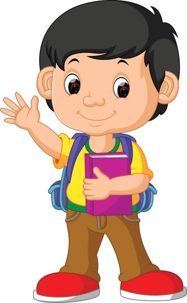
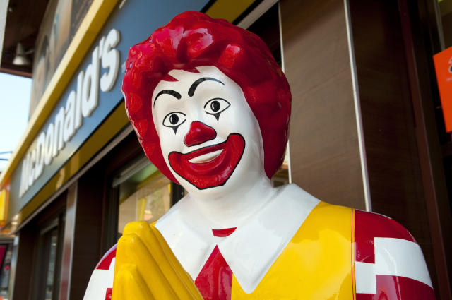

Vincent's Mini Biography
This website is dedicated to Vincent's life
Family
There are four people in my family:
- My mother
- My father
- My sister
- Me (Vincent)
This is my mother. Her english name is Sophia and she is in her late 40's.

This is my father. His english name is Waller and he is in his early 50's.

This is my sister. Her name is Vicky and she is currently 19 years old (3 years older than me).

This is me. My name is Vincent and I am 16 years old.

My favourite hobbies and past-times!
I enjoy playing tennis with my friends, snowboarding, skiing, playing video-games such as Minecraft, and eating at McDonald's.

My favourite foods and restaurants!
Some of my favourite foods are burgers, fries, chicken, and foods from various cultures such as spaghetti and sushi.
Some of my favourite restaurants are McDonalds, Subway, Popeyes, Chick fil A, and a restaurant owned by my cousins in
South Carolina, US.
I also really enjoy eating my mom's cooking!

What I would like to do after finishing highschool
After finishing highschool, I would like to enroll in a business or computer science program at a University. I will try
to get into the best University that I am capable of entering. After university I would like to work a high-paying job and
enjoy the rest of my life!
Like and dislikes about School
Likes
- Can meet and talk to my friends.
- I can learn new things.
- I can improve on the things that I already know
Dislikes
- Not enough sleep. I have to wake up very early.
- I have to learn new things (sometimes I don't want to learn more)
- My schedule is almost always filled up from homework. I don't get much time to do other activities that I enjoy doing, like going to the gym.